Conversation
Ideas exchange News review
 Ideas and News: EQUIPMENT
Ideas and News: EQUIPMENT
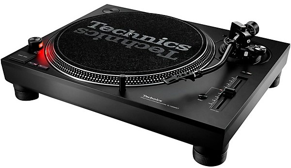
Technics SL-1200MK7 Direct-Drive Professional DJ Turntable
As the go-to choice of DJs the world over, the SL-1200 Series has long been a dominant presence on the global music scene.
Today the brand continues to set the industry standard as the direct drive turntable par excellence. The SL-1200 Direct Drive Turntable has continued evolving as the world standard DJ turntable. It is the mission imposed only on SL-1200 series.
The direct drive motor (D.D. Motor) formed the core of the SL-1200 Series. In addition to providing unparalleled accuracy, the D.D. Motor technology that was introduced in 1970 offered reliability for long-term use with its excellent durability. This further evolved with the SL-1200/1210MK7, and achieved even higher sound quality as the Coreless Direct Drive Motor.
The SL-1200/1210MK7 comes with a static balance S-shaped tonearm to carry on the Technics tradition. The tonearm moves in a unique arc as it tracks the record disc, and reproduces music with high fidelity. The bearing section features a high-precision bearing structure. The tonearm provides high tracking performance without stylus skipping even under hard usage such as scratching.
Each insulator foot consists of an internal spring and rubber, and the bottom surface is covered with a cushion material. They effectively shut out vibration even in a loud sound environment. If the turntable cannot be set up on a perfectly level surface, its height and inclination can be adjusted by turning individual insulator feet.
Pitch control on the SL-1200 was originally utilised for the precise adjustment of rotation speed. Club DJs began using this function to match the pitch between two tracks to achieve smooth transition. This technique led to the explosive popularity of the SL-1200 worldwide. The current vertical fader was first installed on the SL-1200MK2. This change was made to simplify use for DJs. The MK7 has newly incorporated full digital control to enable accurate and stable adjustment within the range of ±8/16%.
The light that illuminates the stylus and its position on the record was featured for the first time on the SL-1200MK2. Technics opted for a popup-type light, not a detachable type, for easier use. The SL-1200/1210MK7 comes with a white LED that offers high brightness and a long life. The illumination was improved and its range was reviewed to ensure optimal visibility.
The original purpose of the strobe light, a standard feature on all models from the first-generation SL-1200, was to enable an accurate visual adjustment of the rotation speed. Since Technics incorporated quartz control, in models starting with the MK2, the rotation speed became extremely stable; thus, there was no need for the strobe anymore. However, DJs wanted the familiar strobe on the turntables they use, so it is still provided on the current model. The SL-1200/1210MK7 comes with an LED strobe that can be set to illuminate in red or blue.
The SL-1200 Series was originally developed in pursuit of pure audio performance. The vibration-absorbing cabinet and insulators suppress undesirable noise, while the gimbal suspension tonearm provides high tracking performance for high-fidelity sound reproduction. The design has not been changed much for more than 40 years, thus retaining the ultimate functional beauty achieved in the first-generation model. The SL-1200/1210MK7 has also further unified the all black design scheme, even in every part, to become more stylish and attractive.
Ideas and News: MUSIC
Nfana wako next door, Thabang Zoo Baloyi from Pretoria, South Africa returns to Just Move Records with another deep felt Episode. Featuring collaborations with Thabang Phaleng, Aquadeep & Veesoul.
"In realms of silence, notes dance,
Through cosmic depths, they take their chance.
In melodies that stretch and sway,
Spaced-out music finds its way. Through vast expanse, it softly calls,
A cosmic symphony, enthralling all.
In the tapestry of space and time,
Spaced-out music, sublime and divine." Just Move Records is a South African Record label, from Edenvale Johannesburg. A&R by Mig Madiq
#TRWR #JMR #MusicInMotion
credits
released May 3, 2024
Ideas and News: EVENTS
Spring Fiesta 2024 is HERE!
First stage lineup and international guest! Make some noise for the Stay True Sounds stage and guest, Crackazat

Ideas and News: GEAR
Klipsch R-51PM Powered Speakers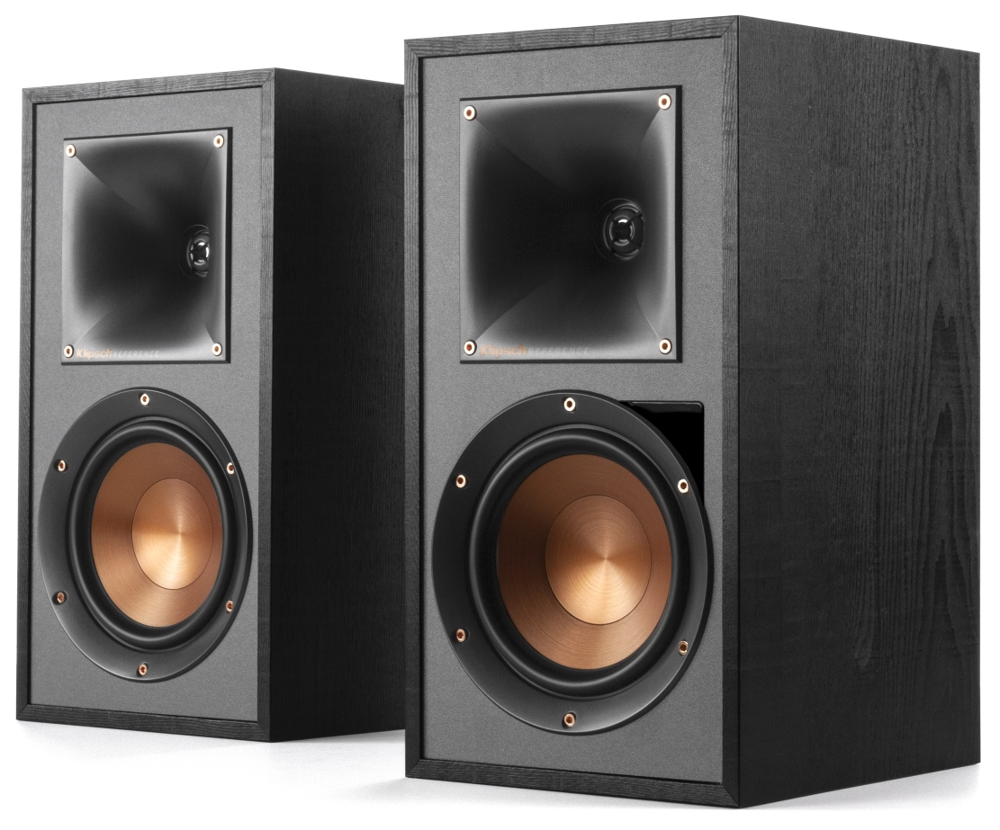
The R-51PM powered speakers use a highly efficient, powerful yet minimalist design that engulfs listeners in their favorite movies and music. With a built-in amplifier, a multitude of inputs and Bluetooth® connectivity, the R-51PM is the most versatile stereo speaker system on the planet.
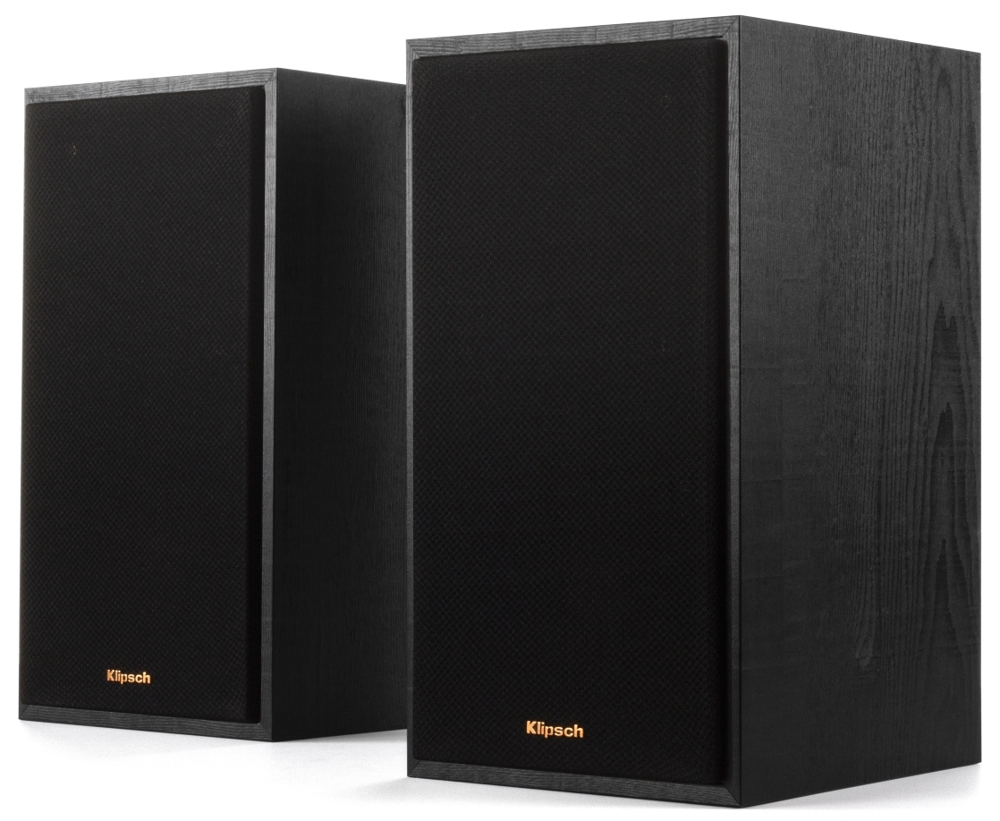
Features:
1- Built-in All-Digital Amplifier 2- 1" Aluminum LTS tweeters 3- 90x90 Square Tractrix Horns 4- Dual 5.25" Spun-Copper IMG Woofers 5- Bass_Reflex via Rear_Firing Port 7- Strong, Flexible Removable Magnetic Grille 8- Dimensions: 13.3" x 7" x 8.5" 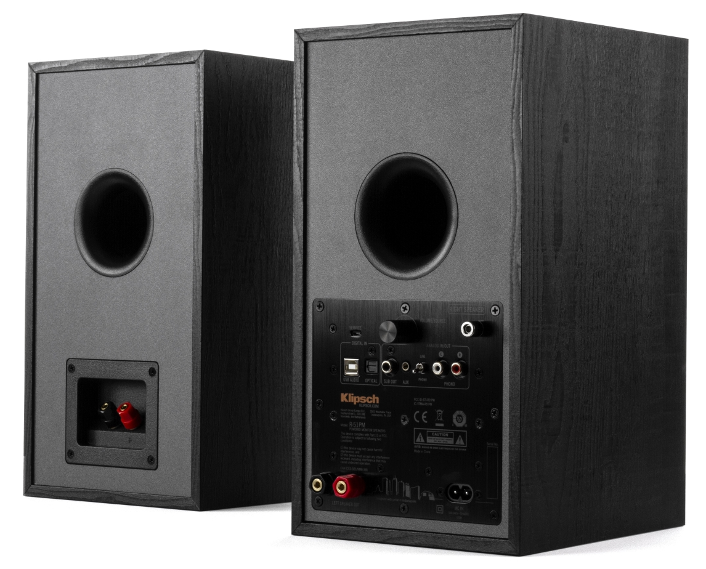
PLAYS WELL WITH OTHERS - Whether you connecting to a turntable, television, computer, cell phone, whatever - these powered speakers work with anything. Equipped with an integrated phono pre-amp, Bluetooth® wireless technology, digital optical, analog RCA and USB inputs, making these powered speakers your new best friend.
Dynamic Bass EQ - As the human ear perceives frequencies differently with variations in output, Klipsch Reference powered speakers will dynamically match the ear’s ability to hear lower frequencies. Typically, only available with audio/video receivers, dynamic volume is a first for Klipsch powered monitors. What you get is powerful bass whether the listening volume is low, cranked up or somewhere in between.
CUSTOM-TUNED AMPLIFICATION - Reference powered speakers leverage independent, ultra-low noise amplifiers that are custom designed to maximize system performance and eliminate the need for external amplification. That means that world-class Klipsch engineers have full control of the signal path. We've tuned the components to be an absolute perfect match, making the system sound incredibly immersive and fills your room with incredible acoustics.
Tractrix® Horn Technology - Klipsch exclusive 90x90º Tractrix® horn technology ensures that the speaker high-frequency energy is aimed at the listener and reduces artificial reverb or filtering caused by indirect sound bouncing off of walls. Using this proprietary focused technology gives you the best clarity, dynamics, and detail from your movies and music.
LINEAR TRAVEL SUSPENSION TWEETER WITH KAPTON® SUSPENSION - Klipsch exclusive Linear Travel Suspension (LTS) aluminum tweeter minimizes distortion for enhanced, detailed performances. Using Kapton, an extremely light and rigid material, in the tweeter suspension provides high efficiency and improves resolution and detail. LTS tweeters are a hallmark of Klipsch speakers, making them some of the best speakers in the world.
Spun Copper IMG Woofers - Injection Molded Graphite (IMG) woofer cones are exceptionally light while being extremely rigid – providing remarkable low frequency response, with minimal cone breakup and distortion. When paired with the Tractrix Horn-Loaded LTS Tweeter, it provides speaker efficiency highest in its class.
Sleek Design - Exposed fasteners, low profile magnetic grilles and a scratch-resistant, textured wood grain vinyl give these powered bookshelf speakers a polished, modern appearance.
Seamless Subwoofer Integration - The Reference powered speakers include a sub-out line that allow you to seamlessly add a subwoofer to your stereo system to enhance low frequencies even further.
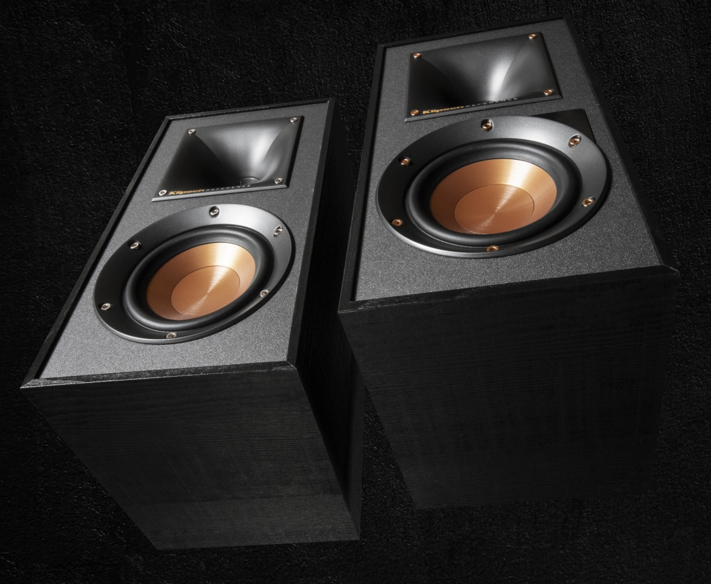
Ideas and News: TECH
Sony Electronics Unveils WF-1000XM5 Truly Wireless Earbuds "For The Music", The Best Noise-Canceling Earbuds¹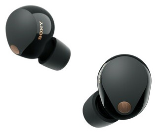
With next-level immersive sound, the WF-1000XM5 earbuds deliver rich, detailed audio that brings your music to life.
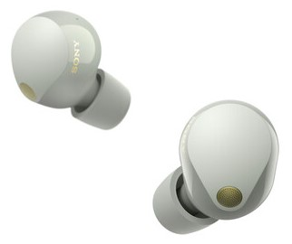
This new model offers the Best Noise Canceling by reducing external noise over a wide bandwidth, from low to high frequencies so you can focus on your music. Following its predecessor, the WF-1000XM4, the WF-1000XM5 raises industry standards with astonishing sound and Sony's best ever call quality2, despite a smaller and lighter design. The WF-1000XM5 earbuds deliver cutting-edge technology and premium sound quality with the best noise-canceling performance. Real-time audio processors and high-performance mics power the specially designed driver unit, Dynamic Driver X, for wide frequency reproduction, deep bass, and more detailed vocals.
For The Music - With the launch of this product, Sony has established the brand tagline "For The Music" for its audio products. Under this tagline, Sony is affirming itself as the premier audio brand connecting creators and music lovers. The "For The Music" brand will include audio products, such as headphones, wireless speakers and professional headphones and microphones. Visit forthemusic.electronics.sony.com to learn how Sony audio is "For The Music", aiming to create authentic music experiences and transcend emotion for fans by supporting creator vision over everything.
The Best Noise-Canceling Earbuds1 - Noise cancellation does not get better than the WF-1000XM5 earbuds. The earbuds reduce external noise over a wide bandwidth, from low to high frequencies. It contains two proprietary processors that cancel more external noise than ever, a new high-performance driver unit Dynamic Driver X, dual feedback microphones, and innovative Noise-Isolation Earbud Tips for a more stable fit. Real-time noise canceling processing can be optimized to provide the best performance for your environment so you will hear a big difference especially in airplanes, trains, or buses. The WF-1000XM5 now feature three microphones on each earbud, including dual feedback mics, which improve low-frequency cancellation performance. Newly developed by Sony, the Integrated Processor V2 unlocks the potential of the HD Noise Canceling Processor QN2e. The unique combination of technology controls the six microphones, across both ears, to deliver unprecedented noise-canceling quality that can be adapted to provide the best performance for your environment. The specially designed driver unit Dynamic Driver X, able to reproduce lower frequencies, has been improved using a dome-edge separation structure that combines different materials, allowing for a more accurate generation of cancellation waves in lower frequencies.
Expertly engineered for astonishing sound quality - Thanks to the specially designed Dynamic Driver X, the WF-1000XM5 lets you experience rich and more detailed vocals. The diaphragm structure combines several different materials for the dome and the edge, achieving low distortion and a clear sound quality. By combining Sony's newly developed Noise-Canceling Processor QN2e and Integrated Processor V2, the WF-1000XM5 incorporates precision 24-bit audio processing and high-performance analogue amplification. The result is low distortion and crystal-clear audio reproduction. The WF-1000XM5 supports High-Resolution Audio Wireless, thanks to LDAC, over industry-adopted audio coding technology. LDAC transmits approximately three times more data than conventional Bluetooth audio for exceptional High-Resolution Audio quality that is closer than ever to studio recording. Using Edge-AI, DSEE Extreme upscales compressed digital music files in real-time, including those from popular streaming services. It dynamically recognizes each song's instrumentation, musical genre, and individual elements, and restores high-range sound lost in compression. Head tracking ensures a realistic and compelling listening experience by automatically adjusting sound fields to compensate for your head movement. Sounds are precisely aligned with your smartphone screen, even as you move, to completely involve you in your viewing by connecting to compatible smartphones/service.
Sony's best ever call quality - Mute the outside world with Precise Voice Pickup Technology and advanced audio signal processing. The person on the other end of the call will hear your voice clearly, even when you are in noisy situations. The WF-1000XM5's noise reduction algorithm was developed with AI machine learning using more than 500 million voice samples to suppress ambient noise, increase accuracy, and extract your voice clearly in various environments. Bone conduction sensors pick up the vibration of your voice directly from your skull bones, helping to isolate your speech from ambient sounds and background noise, for clear calls even in loud environments. An AI-based noise-reduction algorithm based on Deep Neutral Network (DNN) processing and bone conduction sensors allows your voice to come through clear and natural even in a noisy environment. The WF-1000XM5 also has a wind noise-reduction structure and a mesh wrap in the microphone that will minimize noise during calls so you can be heard clearly in windy conditions..
Comfortable and beautifully designed - The WF-1000XM5 earbuds feature an improved, glossy texture and more luxurious feel that fit comfortably in your ears while keeping out external sounds. By downsizing the earbud body and optimizing the placement of the components, the earbud is now approximately 25% smaller and 20% lighter than the WF-1000XM4. The size of the charging case has also been reduced, so it will fit even more sleekly in your pocket. Noise-Isolation Earbud Tips feature a unique polyurethane foam material which reduces noise in the high-frequency range. Soft and elastic, they maximize the contact area between the earbud tip and the ear canal, insulating your sound and reducing noise. It also improves adhesion to the ear canal for a more secure, stable fit. The WF-1000XM5 earbuds feature a shape with an ergonomic design for a more stable fit that was designed by utilizing extensive ear-shape data collated since introducing the world's first in-ear earbuds in 1982. Sony's continuous evaluation of different ear shapes and sensitivities has helped design an ideal earbud shape, secure and comfortable for almost everybody.
Seamless listening experience - The WF-1000XM5 also features Auto Play delivering music and audio notifications when you need them. Music plays at your preferred time, such as when you're putting your earbuds on or starting to walk for a break, uplifting your mood effortlessly. Audio notification reminds you of all your important events, so your phone can stay safely in your pocket. Link with Spotify, Endel and Apple Music, and get your favorite music and relaxing soundscapes. In line with the WF-1000XM5, the WH-1000XM5 now also supports Auto Play. The Auto Play app is in beta phase, meaning its features and benefits are subject to change and improve. If you're looking for new entertainment options beyond music and movies, the WF-1000XM5 uses new sensors and spatial sound technology to deliver immersive sound for Augmented Reality games like "Ingress" from Niantic. When playing "Ingress" with the WF-1000XM5, sensor and spatial sound technologies deliver a new experience: using head tracking, the sound is conveyed from different directions to line up perfectly with the action on the screen. The WF-1000XM5 also presents Sony's popular features like Adaptive Sound Control and Speak-to-Chat as well as Multipoint Connect that lets you pair two Bluetooth devices simultaneously. These earbuds utilize a powerful new Integrated Processor V2, which transmits a Bluetooth signal simultaneously to and from both ears, so you can enjoy a stable sound. And to add to the list, in just one tap, the WF-1000XM5 enables quick, effortless Bluetooth pairing with your Android devices. Get hands-free help by saying "Ok Google" or "Alexa" to activate your preferred voice assistant. Then, listen to music, connect with friends, get notifications, set reminders, and more. You can even control the features of your earbuds, like noise cancellation with your voice. Enjoy up to 8 hours of charge on your earbuds and use the case, which has up to 16 hours of charging capability, for up to 24 hours 16 of use and listening every time you leave the house. And, for your convenience, a 3-minute quick charge will give you up to 60 minutes of play. Qi technology (charger sold sep.) offers easy wireless charging. You can even use a smartphone with Qi technology and battery share function, like the latest Xperia models, to charge your earbuds in their charging case. The earbuds are also water-resistant with an IPX419 rating, so splashes and sweat won't stop you from moving to the music.
Sleek Design - Exposed fasteners, low profile magnetic grilles and a scratch-resistant, textured wood grain vinyl give these powered bookshelf speakers a polished, modern appearance.
Made with the Environment in Mind - WF-1000XM5 uses recycled plastic materials, and adopts Sony's proprietary paper Original Blended Material for the packaging. Original Blended Material is a paper material made from bamboo, sugarcane fibers, and post-consumer recycled paper.
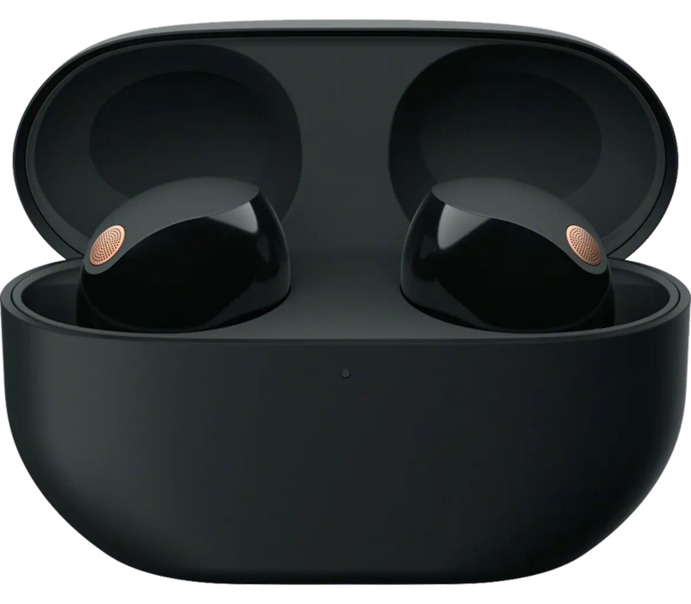
Ideas and News: FASHION
Diesel S-Ukiyo V2 Low - Low-Top Sneakers With Peel-Off Effect
Regular price R5,199.00 ZAR
Product description:
This men's low-top trainer is made from canvas and suede. The all-over yellow print has been randomly removed in some places to create a peel-off effect. Detailed with side D branding and a serrated insert on the outsole."In 1978 Renzo Rosso started Diesel with the intention of creating the world’s most innovated denim. Amidst a worldwide oil crisis, during which diesel was considered to be an alternative fuel, Renzo liked the idea of his brand to be known as an alternative jeans brand, in contrast to the prevalent casual wear giants that had come before.
Renzo intended to reach the entire world since the brand’s very inception, making the word “diesel” an international term pronounced equally all over the world, the perfect name for his endeavor. Since its start, Diesel has used “For Successful Living” as a slogan for the brand’s DNA.
Through a long and storied history of strong, ironic and playful campaigns, Diesel has become a leader in advertising as well as in fashion. Where the world zigged, Diesel zagged, and in the 35 years since its founding, the brand still embraces the same ethos. Diesel has over 5,000 points of sale worldwide with over 400 monobrand stores. Between 1978 and 2012,
the company has produced more than 2,000 different washes of denim.

OTB is an international fashion group, powering a range of global, unconventional brands, including Diesel, Maison Margiela, Marni, Viktor&Rolf, and Jil Sander. The group also controls and manages the Staff International and Brave Kid companies and holds a minority investment in L.A. brand Amiri. OTB embodies the brave, innovative and unapologetic spirit and vision of its founder and president Renzo Rosso, who disrupted the world of fashion with an open-minded, highly creative mentality, aimed at “building not the biggest, but the most alternative fashion group,” as he stated. As its name suggests, - OTB stands for “Only The Brave” - the group pushes boundaries and challenges established rules to re-define the world of fashion and lifestyle, by fostering the creativity of international talents. Through its know-how and state-of-the-art facilities, the group supports the brands in its portfolio in the development of authentic, individual concepts and sustainable, successful businesses.
Embracing consumer-centric digital innovation and advanced technologies, OTB transforms ideas into distinctive and responsible creations targeting unconventional, forward-thinking individuals.
Diesel’s philosophy has remained unwavering since its inception: passion, self-expression, and a determination to change the game. Now we commit to taking on a bold new challenge, confronting the social, economic, and environmental impacts of the fashion industry at large, a challenge Diesel is ready to face - head on. This is why we launched our strategy, Diesel For Responsible Living which outlines our commitment to taking action for the benefit of current and future generations, ensuring Diesel’s continuing success in a changing world, based on four pillars:Be the Alternative
Stand for the Planet
Celebrate Individuality &
Promote Integrity
Our commitment to alternative material and production processes goes hand in hand with our belief that our denim should be made to last. The Diesel Library collection offers evergreen denim essentials designed to transcend trends and be worn season after season. Every style in the Library is designed through a 360 sustainability lens, focusing on all the core components that make our denim so distinctive."
Ideas and News: AUTOMOBIL
 Volkswagen plans to introduce up to ten new all-electric vehicles to the global market by 2026. As part of this strategy CEO of VW Passenger Cars, Thomas Schäfer, was recently on hand to unveil the first of these products, the ID. 2all concept..
Volkswagen plans to introduce up to ten new all-electric vehicles to the global market by 2026. As part of this strategy CEO of VW Passenger Cars, Thomas Schäfer, was recently on hand to unveil the first of these products, the ID. 2all concept..
A brand with a legacy of introducing segment-defining compact vehicles, the ID. 2all concept is said to offer the spaciousness of a modern Golf, within the exterior dimensions of a Polo.
Set to be the first front-wheel drive car to be built on an updated Modular Electric Drive (MEB) architecture, this new entry point into Volkswagen’s ID. family of all-electric vehicles is slightly shorter than a current generation Polo (by 24mm) yet stands 61mm wider and almost 100mm taller than its compact hatch sibling. At 2600mm, the ID. 2all’s wheelbase is closer to that of the Golf than it is to the Polo.
Luggage space is listed as a generous 490-litres.
While simultaneously introducing Volkswagen’s new design language, the significant news regarding the planned 2025 introduction of the ID. 2all is that the brand’s commitment towards a retail price of less than 25 000 euros (which currently translates to less than R500 000) for its new compact car.
“We are transforming the company rapidly and fundamentally – with the clear objective of making Volkswagen a genuine Love Brand,’ says Schäfer. “The ID. 2all shows where we want to take the brand. We want to be close to the customer and offer top technology in combination with fantastic design.
We are implementing the transformation at pace to bring electric mobility to the masses.” Complementing a clean, powerful stance, the ID. 2all’s interior features high-quality finishes and materials while showcasing a user-friendly, 12.9-inch infotainment system and a return to physical controls and dials – something Schäfer feels strongly about. This includes classic audio system volume controls and dedicated climate control settings. The car will also feature modern driver assistance technologies like Travel Assist, IQ.Light and Electric Vehicle Route Planner. Available with a choice of either a 38- or 56kWh battery, the latter installation will allow the ID. 2all an operating range of up to 450 km. Able to charge via 125kW infrastructure, the car’s battery can be topped-up from 10% to 80% in just 20 minutes.
Delivering 166kW to the front wheels, Volkswagen says its newest all-electric package will sprint from 0-100 km/h in less than 7 seconds, and reach a top speed of 160 km/h. “We are transferring the typical Volkswagen virtues to the new world of mobility: top quality and workmanship, outstanding software and digital services with genuine added value. The focus here is always on the needs and requirements of our customers,” says Imelda Labbé, Member of the Brand Board of Management responsible for Sales, Marketing and Aftersales.

Ideas and News: GADGET
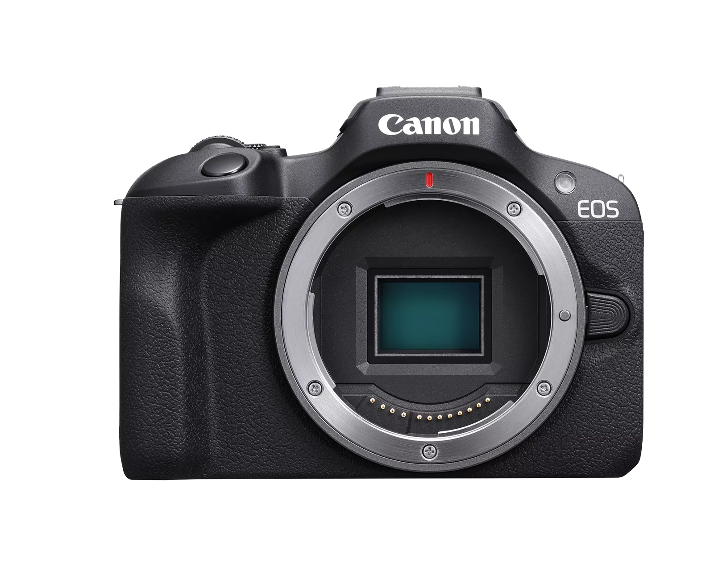
Canon EOS R100
In The Box -
EOS R100 Body
Camera Cover R-F-5
Neck Strap EM-200DB
Battery Charger LC-E17
Battery Pack LP-E17
Battery Pack Cover
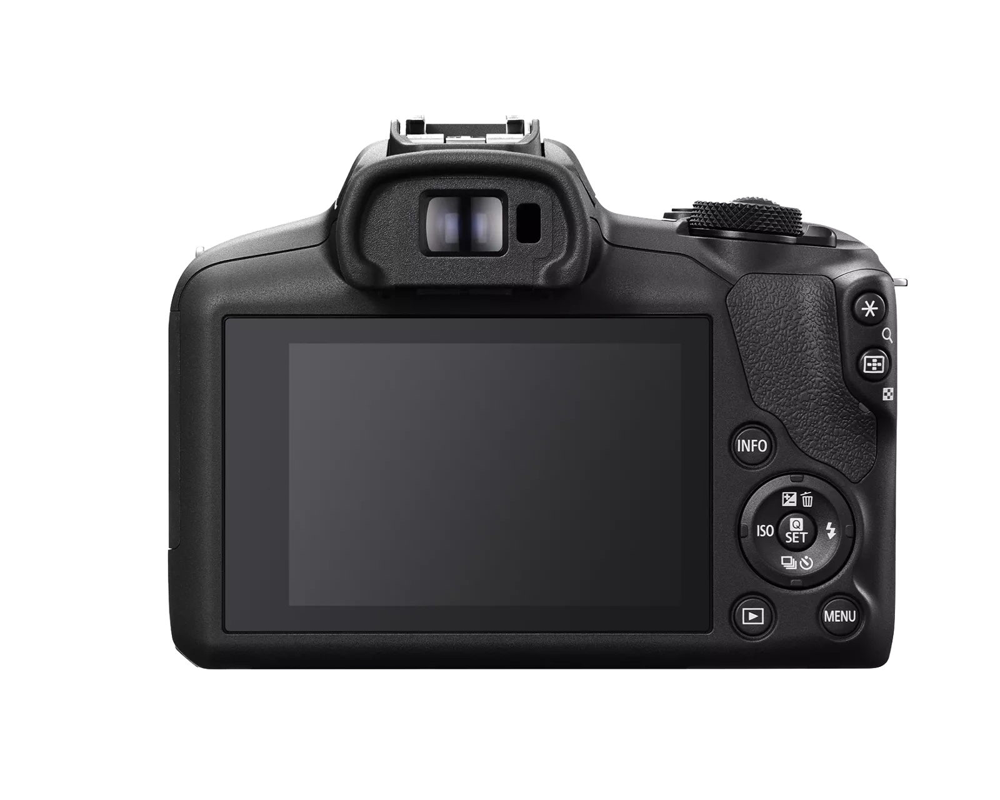
Turn Moments into Memories - Experience the fun of RF mount content creation with the smallest and lightest EOS R series camera1, the Canon EOS R100. Excellent still-image capabilities start with its 24.1 Megapixel APS-C size CMOS Image sensor and DIGIC 8 processor, along with Dual Pixel CMOS AF with the ability to detect human faces and focus on their eyes. The EOS R100 also can record Full HD video at up to 60 frames per second, and detailed, high-res 4K from the central area of the sensor at 24 frames per second.
24.1 Megapixel (APS-C) CMOS Sensor - The EOS R100 is equipped with a 24.1-million-pixel CMOS (APS-C) image sensor and DIGIC 8 Image Processor. With a significantly larger sensor size than many smartphones, this camera can capture images with natural bokeh for beautiful background blur, great color, and low noise. Images look stunning even when enlarged, with fine details reproduced with clarity.
Capture Bright Images Indoors without Flash - Taking advantage of its sensor size, the EOS R100 can take high-sensitivity and low-noise images that capture the atmosphere, even in low-light conditions. That way you can take images at fast shutter speeds to minimize capture shake and subject blur.
Dual Pixel CMOS AF and Eye Detection AF - Dual Pixel CMOS AF* provides fast, accurate autofocus that helps you get the photo you want right as the moment happens. The EOS R100 features an expansive focus area that covers up to approximately 88% horizontal and 100% vertical2 of the picture area, breaking the image up to 143 AF area zones during auto selection. With the EOS R100, you can easily capture your subject quickly with the Eye Detection AF — allowing you to shoot even when the subject is far away. Eye Detection AF can also be used when the subject's full body is in frame, to lock on the eyes from a further distance.
Continuous Shooting - Capture those can’t-miss moments with up to 6.5 shots per second continuous shooting when set to One-Shot AF. This allows you to capture those momentary changes in facial expressions that are easy-to-miss.
Creative Assist and Creative Filters - Take photos in your style with similar intuitive usability of a smartphone app with the EOS R100. Creative Assist allows you to take on the challenge of image creation while in Auto Mode by changing settings such as “background blur,” “brightness,” and “saturation” easily and in real time on the Live View screen. Creative Filters on the EOS R100 allows you to select various effects from your favorite filters just like a smartphone app during shooting or playback3, so you can easily capture impressive photos to share!
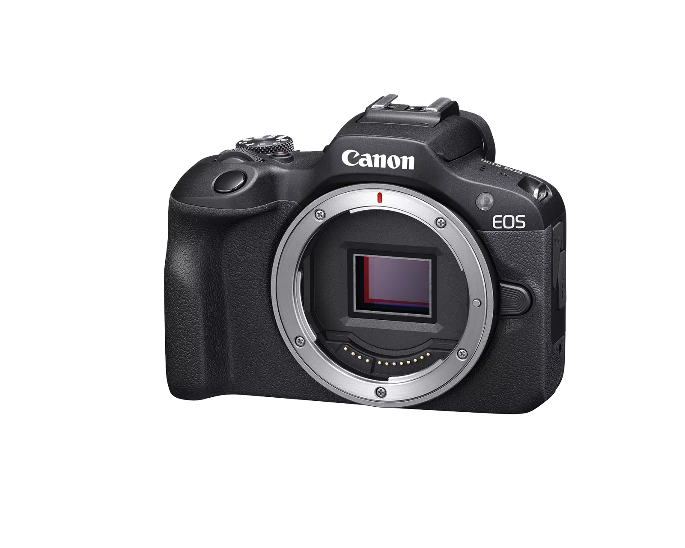
Silent Mode for Quiet Operation - Capture life’s moments without worrying about distracting them with Silent Mode on the EOS R100. Whether you are at your child’s recital, or your newborn baby is sleeping, the camera’s Silent Mode ensures you don’t startle your subject by enabling capture with virtually no shutter sound and preventing flash.
High-Definition Video - With the help of the 24.1 Megapixel CMOS (APS-C) sensor, the EOS R100 can record high-quality 4K movies at up to 24 frames per second, or Full HD movies at up to 60 frames per second. By pairing the camera with a variety of RF lenses, you can express yourself by capturing videos with blurred backgrounds, in dark settings, or using various techniques that would be challenging with smartphones.
Smooth Slow-Motion Videos - HD movies can also be recorded at a high-frame rate of approx. 120 frames per second4 — ideal for smooth, slow-motion playback of videos. Designed to capture fun, beautifully detailed videos, the EOS R100 helps ensure you don’t miss any of the unique expressions of your friends’ or family's faces.
Compact, Lightweight Body - The EOS R100 camera is the smallest and lightest camera in the EOS R series1. Although it is compact and lightweight, the camera features a grip that provides a professional feel and steady hold while shooting. Whether for travel, everyday snapshots, or long-lasting still image or video shoots, you can easily enjoy taking it anywhere.
Precise Electronic Viewfinder - The EOS R100 is equipped with a high-precision 0.39-inch OLED (Organic Light-Emitting Diode) EVF with approx. 2.36 million dots which displays a bright image and extensive shooting information. The EVF has been designed to provide a bright, sharp, and colorful approximate 100% view of the subject at hand.
Built-in Bluetooth® Capability - Bluetooth® pairing helps you connect the camera to compatible smart devices using the free Canon Camera Connect app. This low-energy wireless connection helps preserve battery life while providing remote control of the camera. It also sends continuously updated GPS location data from your phone, letting you geotag what you've captured so you know precisely where you captured the photo.
Built-in Wi-Fi Capability - Enable wireless functions, such as remote live view, file viewing and transfer, by connecting to Wi-Fi quickly and seamlessly. Using the Canon Camera Connect app, you can also transfer files to your compatible mobile device to browse and share on social media.
image.canon Service - Connecting the EOS R100 to the image.canon service will allow you to seamlessly upload all images and movies in their original format and quality, and access them from the dedicated app or through a web browser and automatically forward them to a computer, compatible mobile device, and third-party services.
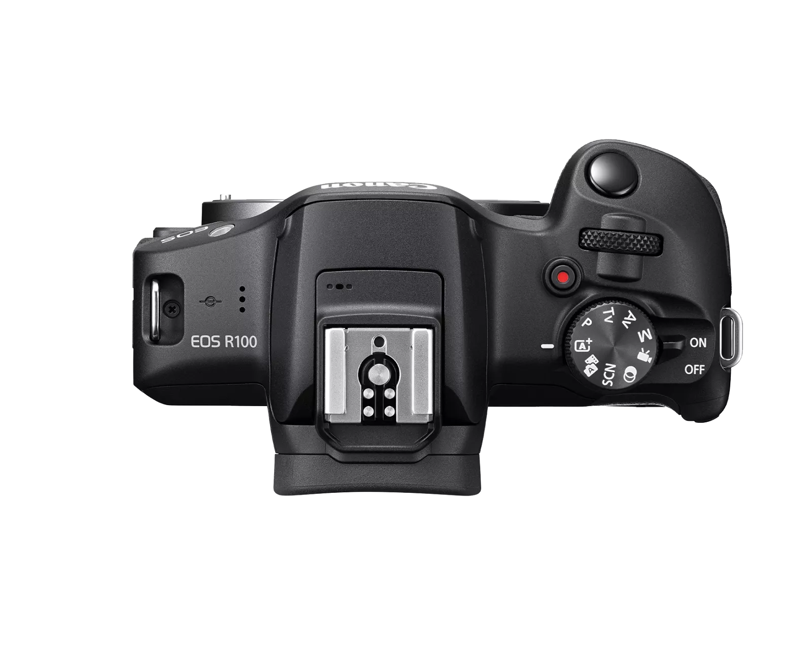
Ideas and News: APP
NETFLIX
Unlimited movies, TV shows, and more - Watch anywhere. Cancel anytime.
Enjoy on your TV - Watch on Smart TVs, Playstation, Xbox, Chromecast, Apple TV, Blu-ray players, and more.
Download your shows to watch offline - Save your favorites easily and always have something to watch.
Watch everywhere - Stream unlimited movies and TV shows on your phone, tablet, laptop, and TV.
Create profiles for kids - Send kids on adventures with their favorite characters in a space made just for them—free with your membership.
Netflix is a streaming service that offers a wide variety of award-winning TV shows, movies, anime, documentaries, and more on thousands of internet-connected devices. You can watch as much as you want, whenever you want without a single commercial – all for one low monthly price. There's always something new to discover and new TV shows and movies are added every week!
Watch Netflix on your smartphone, tablet, Smart TV, laptop, or streaming device, all for one fixed monthly fee. Plans range from R 49 to R 199 a month. No extra costs, no contracts.
Watch anywhere, anytime. Sign in with your Netflix account to watch instantly on the web at netflix.com from your personal computer or on any internet-connected device that offers the Netflix app, including smart TVs, smartphones, tablets, streaming media players and game consoles. You can also download your favorite shows with the iOS or Android app. Use downloads to watch while you're on the go and without an internet connection. Take Netflix with you anywhere.
Netflix is flexible. There are no pesky contracts and no commitments. You can easily cancel your account online in two clicks. There are no cancellation fees – start or stop your account anytime.
Netflix has an extensive library of feature films, documentaries, TV shows, anime, award-winning Netflix originals, and more. Watch as much as you want, anytime you want.
The Netflix Kids experience is included in your membership to give parents control while kids enjoy family-friendly TV shows and movies in their own space. Kids profiles come with PIN-protected parental controls that let you restrict the maturity rating of content kids can watch and block specific titles you don’t want kids to see.

Ideas and News: ENTERTAIN

Tsweu Lifestyle Café
8474 Tsweu Street, Mamelodi, South Africa
+27 (0)12 805 0052
info@tsweulifestylecafe.co.za
We are located in Mamelodi, serving stews and lifestyle.
We invite you to experience our innovative take on urban cuisine & chic atmosphere.

We offer a highly unique dining experience inspired by fine cuisine, high-energy hospitality and "Township" culture. This top restaurant and nightlife hotspot is the place to see and be seen! All the sights, sounds and tastes of this immersive experience will make you feel as if you’ve been transported to space.
Tsweu Lifestyle Cafe is the home to world-renowned comfort food, in an unpretentious setting, in a culturally diverse neighborhood and it all tastes like home! The menu, decor and values are all inspired by Mamelodi itself.